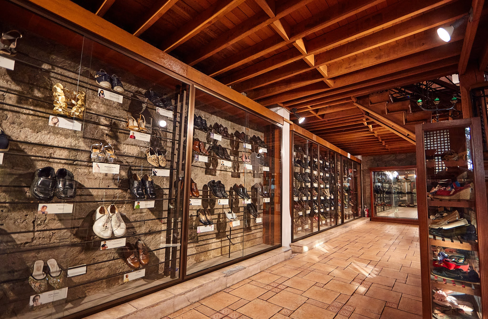
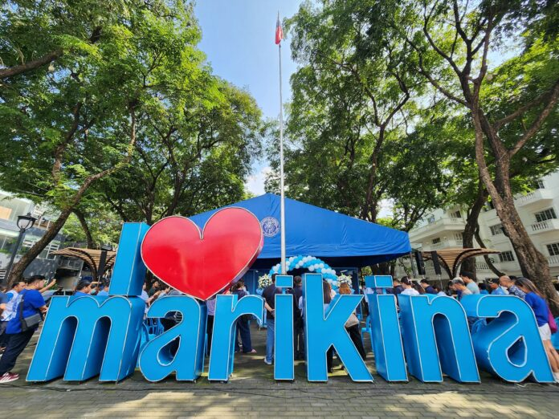

QR Code patungo sa Video Documention.
Isang cultural advocacy website na sumusubaybay sa mga yapak ng kasaysayan, kultura, at pagkakakilanlan ng mga Marikeño. May layuning buhayin at muling palaganapin ang identidad at iba't ibang mga mukha ng kulturang humubog sa mga Marikeño.


Kapag sinabing Marikina, maaaring sapatos, ilog, o isang maunlad na lungsod ang unang pumasok sa isip. Ngunit higit pa sa mga bagay na karaniwang iniuugnay sa lungsod, may mga kuwentong patuloy na humuhubog sa pagkakakilanlan ng mga Marikeño—mga kuwentong matatagpuan sa kanilang pananampalataya, industriya, sining, pagdiriwang, at kaugalian.
Ngunit habang patuloy na nagbabago ang panahon, isang tanong ang kailangang harapin:
Paano natin mapananatiling buhay ang kulturang minana natin sa mga naunang henerasyon?
Sa pamamagitan ng limang mukha ng kultura—pananampalataya, industriya, sining O pagdiriwang, at kaugalian—tinatahak namin ang mga kuwentong bumuo sa komunidad at sinusuri kung paano nananatili, nagbabago, o unti-unting nawawala ang mga ito sa kasalukuyan.
Kilalanin ang kasaysayan ng paggawa ng sapatos at iba pang kabuhayan na nag-iwan ng malaking yapak sa ekonomiya at identidad ng lungsod.
Basahin ItoTuklasin ang mga paniniwala, pananampalataya at relihiyosong gawain na naging bahagi ng buhay, sandigan, lakas at pagkakaisa ng komunidad.
Basahin ItoTingnan kung paano nabubuhay ang kultura sa pang-araw-araw na pakikitungo, pagpapahalaga, at mga tradisyong isinasabuhay ng mga Marikeño.
Basahin ItoTuklasin ang mga sining tulad ng kultural na pagtatanghal na nagsasalaysay ng kuwento at nagsisilbing bakas ng nakaraan at inspirasyon para sa kasalukuyan.
Basahin ItoAng kultura ay hindi nananatiling pareho. Kasabay ng modernisasyon, teknolohiya, globalization, at social media, nagbabago rin ang paraan kung paano natin nakikita at naipapakita ang kultura.
Ngunit ang pagbabago ay may kasamang responsibilidad kung kaya’t responsibilidad natin itong pahalagahan. Tandaan natin na ang pagpapanatili ng kultura ay hindi lamang responsibilidad ng mga nakatatanda. Bilang kabataan, mayroon tayong kakayahang magsaliksik, matuto, magtanong, at magbahagi.
Sa pamamagitan ng social media at teknolohiya, maaari nating ipakilala ang kultura ng Marikina sa mas maraming tao. Ngunit kasama ng pagkakataong ito ang responsibilidad na magbahagi nang tama, responsable, at may kamalayan o sensitibidad.
Hindi natin kailangang manatili sa nakaraan upang mapanatili ang kultura. Kailangan lamang nating dalhin ang mahahalagang pamana nito habang patuloy tayong sumusulong.
Ang Marikina ay hindi lamang isang lungsod na may sariling kasaysayan. Ito ay isang komunidad na binuo ng maraming yapak—ng mga taong nauna sa atin, ng mga pamilyang nagpanatili ng tradisyon, ng mga manggagawang nagtaguyod ng kabuhayan, ng mga komunidad na patuloy na nagdiriwang, at ng mga kabataang magdadala ng mga kuwentong ito sa hinaharap.